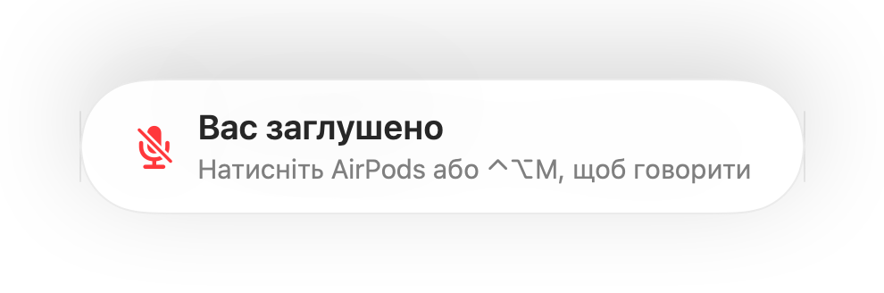

Нагадування «Вас заглушено» для кожного застосунку для дзвінків
Zoom попереджає, коли ви говорите із заглушеним мікрофоном. Більшість інших програм цього не роблять, а дзвінки у браузері майже ніколи. Ви хвилину щось пояснюєте, а потім помічаєте, що всі просто чекають.
Muffle помічає мовлення, поки мікрофон заглушено, і показує нагадування в будь-якому застосунку. Коли під час дзвінка використовуються AirPods або гарнітура, застосунок слухає лише рівень гучності вбудованого мікрофона Mac. Звук не записується.
Увімкніть нагадування
- 1
Установіть Muffle і надайте доступ до мікрофона.
- 2
Переконайтеся, що в меню «Налаштування Muffle» увімкнено «Нагадувати, коли я говорю із заглушеним мікрофоном».
- 3
Приєднайтеся до дзвінка через AirPods або гарнітуру та заглушіть мікрофон.
- 4
Почніть говорити. З'явиться нагадування «Вас заглушено».

- Приєднуєтеся до дзвінка, коли мікрофон ще заглушено після попереднього? Muffle нагадає про це щойно почнеться дзвінок.
- Друк на клавіатурі не активує нагадування. Воно спрацьовує лише на чітке мовлення.
Питання та відповіді
Чи працює нагадування із вбудованим мікрофоном Mac?
Воно працює, коли в дзвінку використовуються AirPods або гарнітура. Якщо дзвінок використовує вбудований мікрофон Mac, цей мікрофон заглушено, і він вас не чує.
Чи записується мій звук?
Ні. Muffle лише вимірює рівень гучності і ніколи не зберігає та не надсилає звук.